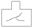
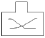
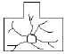
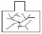

식품기사 (2013-08-18 기출문제)
1과목: 식품위생학
1. 단백성 식품의 부패 정도를 측정하는 지표와 가장 거리가 먼 것은?
- 트리메틸아민
- 히스타민
- 휘발성 염기질소
- 과산화물가
(정답률: 65%)

2. HACCP 인증 의무대상 적용식품이 아닌 것은?
- 어묵류
- 두부
- 빙과류
- 비가열음료
(정답률: 68%)
3. HACCP애 관한 설명 중 옳지 않은 것은?
- 위해분석(hazard analysis)은 위해가능성이 있는 요소를 찾아 분석·평가하는 작업이다.
- 중요관리점(critical control point) 설정이란 관리가 안될 경우 안전하지 못한 식품이 제조될 가능성이 있는 공정의 결정을 의미한다.
- 관리기준(critical limit)이란 위해분석 시 정확한 위해도 평가를 위한 지침을 말한다.
- HACCP의 7개 원칙에 따르면 중요관리점이 관리기준내에서 관리되고 있는지를 확인하기 위한 모니터링 방법이 설정되어야 한다.
(정답률: 70%)
4. 카페인 섭취에 대한 설명으로 틀린 것은?
- 우리나라 국민의 카페인 평균 섭취량은 최대 일일섭취권고량보다 높은 수준으로 카페인의 과도한 섭취를 방지하는 정책이 필요하다.
- 우리나라 카페인 최대 일일섭취권고량은 성인 400mg 이하, 임산부 300mg 이하, 어린이·청소년 2.5mg/kg(체중) 이하이다.
- 카페인 함량이 액체 1mL당 0.15mg 이상인 고카페인 액상식품의 경우 총카페인 함유량과 함께 섭취주의문구를 의무적으로 표시해야한다.
- 피로를 덜 느끼게 하는 등 긍정적 측면이 있지만 과다 섭취 시 불면증, 신경과민 등의 부작용이 있어 어린이나 청소년이 카페인에 과다 노출 되지 않도록 해야 한다.
(정답률: 62%)
5. 먹는물(수돗물)의 안전성을 확보하기 위한 방편으로 관리되고 있는 유해물질로서, 유기물 또는 화학물질에 염소를 처리하여 생성되는 발암성 물질은?
- 트리할로메탄
- 메틸알코올
- 니트로사민
- 다환방향족 탄화수소류
(정답률: 87%)
6. 식중독의 분류와 관련된 내용의 연결이 틀린 것은?
- 화학적 식중독 - 조리 기구에 의한 중독 - 녹청, 납
- 원충성 식중독 - 독소형 - 시겔라
- 자연독 식중독 - 곰팡이 독소에 의한 중독 - 황변미독
- 바이러스성 식중독 - 공기, 접촉, 물 등의 경로로 전염 - 로타바이러스
(정답률: 73%)
7. 베네루핀에 대한 중독 증상 설명으로 틀린 것은?
- 모시조개, 바지락이 주요 원인식품이다.
- 대단히 급격하게 증상이 나타나 식후 30분이면 심한 복통이 나타난다.
- 열에 안정하여 pH 5~8에서 100℃, 1분간 가열해도 파괴되지 않는다.
- 주로 3~4월경에 발생한다.
(정답률: 50%)
8. 식품첨가물의 사용기준을 설정하는데 있어서 가장 중요한 인자는?
- 1일섭취 허용량
- 식품의 생산지
- 식품첨가물의 가격
- 사람의 성별
(정답률: 92%)
9. 단백뇨를 주증상으로 하며 체내 칼슘의 불균형을 초래하는 금속중독은?
- 납 중독
- 망간 중독
- 수은 중독
- 카드뮴 중독
(정답률: 68%)
10. 유해성 합성착색료와 거리가 먼 것은?
- auramine
- rhoamine B
- crystal violet
- carotenoids
(정답률: 77%)
11. 식품에 사용되는 합성보존료의 목적은?
- 식품의 산화에 의한 변패를 방지
- 식품의 미생물에 의한 부패를 방지
- 식품에 감미를 부여
- 식품의 미생물을 사멸
(정답률: 77%)
12. 식품에 사용되는 기구 및 용기· 포장의 기준 및 규격으로 틀린 것은?
- 전류를 직접 식품에 통하게 하는 장치를 가진 기구의 전극은 철, 알루미늄, 백금, 티타늄 및 스테인리스 이외의 금속을 사용해서는 아니 된다.
- 기구 및 용기, 포장의 식품과 접촉하는 부분에 사용하는 도금용 주석은 납 0.1%이상 함유하여서는 아니 된다.
- 기구 및 용기·포장 제조 시 식품과 직접 접촉하지 않은 면에도 인쇄를 해서는 아니된다.
- 식품과 접촉하는 부분에 제조 또는 수리를 위하여 사용하는 금속은 납을 0.1%이상 또는 안티몬을 5% 이상 함유해서는 아니 된다.
(정답률: 74%)
13. 식품 중의 포름알데히드 검사에서 chromotropic acid 반응의 정색은?
- 가온 시에 자색으로 변한다.
- 가온 시에 적색으로 변한다.
- 냉각 시에 흑색으로 변한다.
- 냉각 시에 백색으로 변한다.
(정답률: 65%)
14. 폐흡충과 관계가 가장 깊은 것은?
- 어패류 및 가재
- 곤충 및 곰팡이
- 육류 및 난류
- 채소 및 과실
(정답률: 88%)
15. 수입쇠고기 유통이력관리시스템(수입유통이력제)에 대한 설명으로 틀린 것은?
- 수입쇠고기 취급·판매 영업자에게 수입쇠고기의 수입부터 판매까지 유통단계별 거래내역을 신고·기록토록 하는 제도이다.
- 시스템브랜드는 "Meat Safe"로 위해한 수입쇠고기 유통차단 및 원산지 둔갑을 방지하겠다는 의미이다.
- 감독기관은 농림축산식품부이다.
- 의무적용대상은 모든 쇠고기 수입업자, 종업원 5인 이상 식육포장처리업자 등이다.
(정답률: 65%)
16. 식품의 살충, 살균 등의 목적으로 사용되는 방사선 중 조사기준이 되는 것은?
- C60의 감마선
- C137의 감마선
- Sr90의 베타선
- I137의 베타선
(정답률: 86%)
17. 다음 중 성장에 있어 가장 높은 수분활성도를 요구하는 균은?
- 곰팡이
- 효모
- 세균
- 내삼투압성 곰팡이
(정답률: 84%)
18. 다음 중 허용 살균제 또는 표백제가 아닌 것은?
- 고도표백분
- 차아염소산나트륨
- 과산화수소
- 클로라민 T
(정답률: 71%)
19. 식품위생 분야 종사자의 건강진단 규칙에 의거한 건강진단 항목이 아닌 것은?
- 장티푸스(식품위생 관련 영업 및 집단급식소 종사자만 해당한다.)
- 폐결핵
- 전염성 피부질환(한센병 등 세균성 피부질환을 말한다.)
- 갑상선 검사
(정답률: 90%)
20. 카드뮴 중독에 의해 가장 큰 장애를 받는 기관은?
- 중추신경계
- 심장
- 신장
- 위장
(정답률: 68%)
2과목: 식품화학
21. Gel과 Sol에 대한 설명 중 틀린 것은?
- 일반적으로 polymer의 성격을 갖고 있는 탄수화물이나 단백질이 다수의 물을 함유하여 Gel을 형성한다.
- Gel을 장기간 방치하면 이액현상(syneresis)이 발생하는데 이는 중합체가 수축하여 분산매인 물을 분리시키는 현상이다.
- Gel과 Sol은 온도변화나 분산매인 물의 증감에 의해 항상 가역적으로 변환된다.
- Sol에는 전해질의 첨가에 따른 교질상태의 안정화에 따라 친수성 Sol과 소수성 Sol로 나뉠 수 있다.
(정답률: 69%)
22. 닌하이드린(Ninhydrin) 반응과 가장 관계 깊은 것은?
- 환원당의 정량
- 유기산의 정량
- 아미노산의 정색반응
- 지방산의 정색반응
(정답률: 61%)
23. 쓴맛을 부여하는 함질소 염기성 유기화합물 alkaloids가 아닌 것은?
- caffeine
- theobromine
- naringin
- quinine
(정답률: 43%)
24. 비타민 B2는 산성에서 빛에 노출되면 lumichrome으로 분해된다. 다음 중 비타민 B2를 광분해로부터 보존할 수 있는 방법이 아닌 것은?
- 비타민 B1 공존
- 비타민 B6 공존
- 비타민 C 공존
- 갈색병에 보관
(정답률: 53%)
25. 황태, 쇠고기, 감자 등을 오랫동안 삶아서 특유의 향신료를 제조하려 한다. 가열 처리 공정 중에 생성되리라 예상 되는 성분은?
- 벤조피렌
- HMF(hydroxymethylfurfural)
- 플라보노이드
- 자일리톨
(정답률: 65%)
26. 동물의 도살과 관련된 설명으로 틀린 것은?
- 도살 후 글리코겐의 함량이 적으면 pH가 빨리 떨어지지 않아 쉽게 부패가 일어난다.
- 도살시 전기충격이나 탄산가스로 질식을 시키기도 한다.
- 도살 전에 사료를 주면 도살 후 방혈이 어렵고 분해물질의 냄새가 난다.
- 도살시 스트레스를 주면 도살 후 방혈이 용이하고 고기 육질도 좋다.
(정답률: 86%)
27. 점탄성을 나타내는 식품과 거리가 먼 것은?
- 마가린
- 육류
- 펙틴 젤
- 가소성 고체 지방질
(정답률: 73%)
28. 자연식품 단백질의 구성 아미노산이 아닌 것은?
- asparagine, histidine
- ornithine, thyroxine
- proline, tyrosine
- glutamin, arginine
(정답률: 51%)
29. 우유의 가공 공정에 대한 설명 중 틀린 것은?
- 균질화 공정을 통하여 단백질 및 지방의 소화율, 흡수율을 증진시킨다.
- 멸균 우유는 가열취가 거의 없고 비타민 등 영양소의 손실을 최소화한 것이다.
- 우유를 40℃ 이상에서 가열하면 얇은 피막을 형성하는 램스덴현상이 일어나는데 지방과 락토알부민이 피막성 응고물과 어울려 형성된 것이다.
- 우유를 80℃이상에서 가열하면 휘발성 황화물과 황화수소가 생성되어 특유의 가열취가 발생한다.
(정답률: 75%)
30. 다음의 과일 중 고기의 연육소 효과가 가장 적은 것은?
- 파인애플
- 무화과
- 바나나
- 파파야
(정답률: 80%)
31. 펙틴(pectin)에 대한 설명으로 옮은 것은?
- polygalacturonic acid의 methyl ester가 다수 중합된 화합물이다.
- polyfructosan으로 구성되었다.
- galactosan의 황산 ester이다.
- D-mannouronic acid와 L-glucuronic acid로 된 polyuronide이다.
(정답률: 65%)
32. cyanidin-3-galactoside는 다음 중 어디에 속하는 성분인가?
- 탄닌(tannin)
- 안토시아닌(anthocyanin)
- 안토크잔틴(anthoxanthin)
- 플라바논(flavanone)
(정답률: 76%)
33. 다음 carotenoid 중 xanthophyll 그룹에 해당하는 것은?
- β-carotene
- cryptoxanthin
- α-carotene
- lycopene
(정답률: 75%)
34. 다음 중 전분의 노화속도와 가장 관련이 적은 것은?
- 전분입자의 크기
- amylopectin의 함량
- 수분함량
- 온도
(정답률: 69%)
35. 청색값(blue value)이 8인 아밀로펙틴에 β-amylase를 반응시키면 청색값의 변화는?
- 낮아진다.
- 높아진다.
- 순간적으로 낮아졌다가 시간이 지나면 다시 8로 돌아간다.
- 순간적으로 높아졌다가 시간이 지나면 다시 8로 돌아간다.
(정답률: 68%)
36. 데치기(blanching) 공정 시 공정이 잘 되었는지를 확인하는 효소로 가장 적합한 것은?
- polyphenol oxidase
- peroxidase
- lipase
- cellulase
(정답률: 48%)
37. 관능검사에 대한 설명 중 틀린 것은?
- 관능검사는 식품의 특성이 시간, 후각, 미각, 촉각 및 청각으로 감지되는 반응을 측정, 분석, 내지 해석하는 과학의 한 분야이다.
- 관능검사 패널의 종류는 차이식별패널, 특성묘사패널, 기호조사패널 등으로 나뉠 수 있다.
- 특성묘사 패널은 재현성 있는 측정결과를 발생시키도록 적절히 훈련되어야 한다.
- 보통 특성묘사 패널의 수가 가장 많고 기호조사 패널의 수가 가장 적게 필요하다.
(정답률: 85%)
38. 기능이 다른 유화제A (HLB 20)와 B(HLB 4.0)를 혼합하여 HLB가 16.0인 유화제혼합물을 만들고자 한다. 각각 얼마씩 첨가해야 하는가?
- A 85(%) + B 15(%)
- A 75(%) + B 25(%)
- A 65(%) + B 35(%)
- A 55(%) + B 45(%)
(정답률: 69%)
39. 관능검사법의 장소에 따른 분류 중 이동수레(mobile serving cart)를 활용하여 소비자 기호도 검사를 수행하는 방법은?
- 중심지역 검사
- 실험실 검사
- 가정사용 검사
- 직장사용 검사
(정답률: 83%)
40. 조직감의 특성에 대한 설명으로 틀린 것은?
- 견고성(경도)은 일정변형을 일으키는데 필요한 힘의 크기이다.
- 응집성은 물질이 부서지는에 드는 힘이다.
- 점성은 흐름에 대한 저항의 크기이다.
- 접착성은 식품 표면이 접촉 부위에 달라붙는 힘을 극복하는데 드는 일의 양이다.
(정답률: 75%)
3과목: 식품가공학
41. 일반적인 CA저장에 대한 설명으로 옳은 것은?
- 초기에 가스를 주입하거나 내용물 자체에 의해 발생하는 가스를 조절하지 않고 방치하는 방법이다.
- 저장수명에 저해되는 에틸렌이 발생하는 문제가 있다.
- 산소, 이산화탄소, 질소 등의 비율을 계속 측정하여 부족한 성분을 공급하는 장치가 필요하다.
- 플라스틱 필름이나 저장상자 등 20kg이하의 소포장단위에 매우 적합한다.
(정답률: 77%)
42. 외경이 10cm인 철관을 5cm의 단열재 (k = 0.2W/m·K)로 보온하였다. 철관 외벽의 온도가 150℃, 단열재 표면의 온도가 30℃일 때 철관 1m당 손실되는 열량은 얼마인가?
- 117.4 W
- 217.4 W
- 317.4 W
- 417.4 W
(정답률: 45%)
43. 유지의 융점에 대한 설명 중 틀린 것은?
- 지방산의 탄소수가 증가할수록 융점이 높다.
- cis형이 trans형보다 높다.
- 포화지방산보다 불포화지방산으로 된 유지가 융점이 낮다.
- 탄소수가 짝수번호인 지방산은 그 번호 다음 홀수번호 지방산보다 융점이 높다.
(정답률: 45%)
44. 종국(seed koji)제조 시 목회(나무 탄 재)를 첨가하는 목적은?
- 증자미의 수분 조절
- 유해 미생물의 발육 저지
- 코오지 균의 접종 용이
- 표면에 포자 착생 용이
(정답률: 80%)
45. 다음 중 키틴(chitin)이 많이 함유된 식품은?
- 고등어
- 마른 새우
- 조갯살
- 대구
(정답률: 88%)
46. 화미의 제조법으로 가장 적당한 방법은?
- 쌀을 증자한 후 50℃의 공기로 건조한다.
- 쌀을 증자한 후 80℃의 공기로 건조한다.
- 쌀을 증자한 후 햇볕에 말린다.
- 쌀을 증자한 후 음지에서 말린다.
(정답률: 60%)
47. 유지를 가공하여 경화유를 만들 때 촉매제로 사용되는 것은?
- 질소
- 수소
- 니켈
- 헬륨
(정답률: 83%)
48. 고형분 함량이 55%인 농축오렌지 주스의 건량기준 수분함량은?
- 약 45%
- 약 110%
- 약 122%
- 약 82%
(정답률: 39%)
49. 피단(pidan)의 설명으로 가장 알맞은 것은?
- 달걀을 삶아서 난각을 제거하고 조미액에 담가서 맛이 든 다음 훈연시켜 저장성이 우수하고 풍미가 양호한 제품이다.
- 달걀을 껍질째로 NaOH, 식염의 수용액에 넣어, 알칼리 성분을 계란 속으로 서서히 침입시켜 난단백을 응고시킨 제품이다.
- 달걀을 물에 끓여 둔부를 깨어 스푼이 들어갈 만큼 난각을 벗기고 식염, 후추를 뿌려 만든다.
- 달걀을 염지액에 담근 후 한번 끓이고 냉각시켜 만든다.
(정답률: 84%)
50. 통조림의 저장 과정에서 일어날 수 있는 변질 중 flat sour와 관계가 없는 사항은?
- 가스를 생성하지 않는다.
- Bacillus 속의 세균에 의한 변질이다.
- 한쪽 뚜껑을 누르면 반대쪽 뚜껑이 튀어나온다.
- 내용물이 신맛이 난다.
(정답률: 64%)
51. 가공유지 중 마가린보다 가소성이 더 우수한 제품은?
- 샐러드유
- 드레싱
- 쇼트닝
- 어유
(정답률: 84%)
52. 쇼트닝의 특성에 대한 설명으로 틀린 것은?
- 쇼트닝성 -제품이 바삭바삭하게 되거나 바스러지기 쉬운 성질
- 크리밍성 - 공기를 안고 들어가는 성질
- 컨시스턴시 - 끈기를 갖는 성질
- 흐름성 - 액체형으로 물처럼 잘 흐르는 성질
(정답률: 47%)
53. 동결속도에 대한 설명으로 틀린 것은?
- 식품의 표면적이 클수록 동결속도가 빠르다.
- 고형성분이 적을수록 동결속도가 빠르다.
- 크기와 두께가 작을수록 동결속도가 빠르다.
- 식품과 냉매간의 온도차가 클수록 동력속도가 빠르다.
(정답률: 44%)
54. 제빵 방법 중 스트레이트법에 비교하여 스펀지법의 장점이 아닌 것은?
- 빵이 가볍다.
- 효모가 적게 든다.
- 빵의 조직이 좋다.
- 제품의 향기가 강하다.
(정답률: 57%)
55. 김치의 초기 발효에 관여하는 저온숙성의 주 발효균은?
- Leuconostoc mesenteroides
- Lactobacillus plantarum
- Bacillus macerans
- Pediococcus cerevisiae
(정답률: 74%)
56. 발효유에 사용되는 starter는?
- 고초균
- 유산균
- 장구균
- 황국균
(정답률: 81%)
57. 고기의 연화제로 많이 쓰이는 효소는?
- 리파아제(lipase)
- 아밀라아제(amylase)
- 인버타아제(invertase)
- 파파인(papain)
(정답률: 83%)
58. 신선한 식품을 냉장고에 저온저장할 때 저온저장의 효과가 아닌 것은?
- 미생물의 발육 속도를 느리게 한다.
- 저온균을 살균한다.
- 호흡 작용 속도를 느리게 한다.
- 효소 및 화학 반응속도를 느리게 한다.
(정답률: 86%)
59. 병조림의 파손형태에 관한 그림 중 충격에 의해 파손된 형태는?




(정답률: 78%)
60. 사후강직 전의 근육을 동결시킨 뒤 짧은 시간에 해동시킬 때 많은 양의 Drip을 발생시키며 강하게 수축되는 현상은?
- 자기분해
- 해동강직
- 숙성
- 자동산화
(정답률: 86%)
4과목: 식품미생물학
61. 에틸알코올 발효 시 에틸알코올과 함께 가장 많이 생성되는 것은?
- CO2
- H2O
- C3H5(OH)3
- CH3OH
(정답률: 82%)
62. 식염(NaCl)이 미생물 생육을 저해하는 원인이 아닌 것은?
- 삼투압에 의해 원형질 분리가 일어난다.
- 탈수작용으로 세포내 수분을 뺏는다.
- 산소용해도가 증가한다.
- 세포의 탄산가스 감수성을 높인다.
(정답률: 70%)
63. 전분의 비환원성 말단으로부터 포도당 단위로 가수분해하는 효소는?
- cellulase
- glucoamylase
- β-galactosidase
- glucose isomerase
(정답률: 76%)
64. 돌연변이원 알킬(alkyl)화제에 대한 설명으로 틀린 것은?
- 대표적인 알킬(alkyl)화제에는 DMS, DES, EMS 등이 있다.
- 알킬(alkyl)화제는 주로 구아닌(guanine)을 알킬(alkyl)화 시켜 염기짝의 변화를 초래한다.
- 대부분의 알킬화제는 강력한 발암원이다.
- 일반적으로 대장균의 경우 사멸율이 99% 이상으로 처리되었을 때 변이율이 높다.
(정답률: 47%)
65. 우유 표면에 점질물이 생기게 하는 미생물은?
- Fusarium spp.
- Alcaligenes viscolactis
- Pseudomonas spp.
- Flavobacterium spp.
(정답률: 40%)
66. 포도당을 과당으로 전환할 때 관계하는 효소는?
- glucose oxydase
- glucose isomerase
- glucose dehydrogenase
- glucokinase
(정답률: 79%)
67. 전사(transcription)와 번역(translation)이 동시에 일어나는 세포는?
- 진핵세포(eukaryotic cell)
- 원핵세포(procaryotic cell)
- 동물세포
- 식물세포
(정답률: 65%)
68. 어떤 세균이 20분마다 규칙적으로 분열한다면 세균 1개는 2시간 후에 몇 개로 되는가?
- 20개
- 40개
- 56개
- 64개
(정답률: 84%)
69. 자외선이 살균효과를 갖는 주된 이유는?
- 단백질 변성을 초래한다.
- RNA 변이를 일으킨다.
- DNA 변이를 일으킨다.
- 세포내 ATP를 고갈시킨다.
(정답률: 69%)
70. 미생물의 변이 처리법으로 부적절한 것은?
- 방사선, 자외선 조사법
- sodium nitrite 등 아질산 처리
- nitrogen mustard 등 alkyl화제 처리
- bromouracil 등 염기유사체 처리
(정답률: 43%)
71. 단백질과 RNA로 구성되어 있으며 단백질 합성을 하는 것은?
- 미토콘드리아(mitochondria)
- 크로모좀(chromosome)
- 리보솜(ribosome)
- 골지체(golgi apparatus)
(정답률: 84%)
72. 식물의 병과 그 원인균이 바르게 짝지어진 것은?
- 보리 붉은 곰팡이병 - Fusarium moniliforme
- 흑반병 - Alternaria tenius
- 키다리병 - Fusarium graminearum
- 탄저병 - Botrytis cinerea
(정답률: 42%)
73. 곰팡이에 의한 빵의 변패를 방지하기 위한 방법으로 옳지 않은 것은?
- 빵을 식혀서 포장한다.
- 설비를 세척, 소독한다.
- 빵 반죽 발효시간을 연장한다.
- 반죽에 허용된 식품첨가물을 첨가한다.
(정답률: 81%)
74. 일반적인 미생물 발육소(생장요소, growth factor)에 해당하지 않는 것은?
- 아미노산
- 비타민
- 무기염류
- 지방산
(정답률: 38%)
75. photoautotroph가 탄소원으로 이용하는 것은?
- C2H5OH5
- C6H12O6
- CO2
- CH4
(정답률: 77%)
76. 부패의 판정 방법에서 점성, 탄성을 측정하여 판정하는 방법은?
- 관능검사법
- 미생물학적 방법
- 화학적 방법
- 물리학적 방법
(정답률: 80%)
77. 그람 양성 세균에 존재하지 않는 세포 성분은?
- peptidoglycan
- lipopolysaccharide
- teichoic acid
- phospholipid
(정답률: 62%)
78. 다음 중 가장 넓은 범위의 생육 pH를 가지는 것은?
- 세균
- 효모
- 바이러스
- 곰팡이
(정답률: 50%)
79. 자낭균류와 조상균류의 차이점 설명으로 틀린 것은?
- 자낭균류 - Neurospora, 조상균류 - Achlya
- 자낭균류 - 자낭속에 8개 포자, 조상균류 - 접합자 속 포자수는 일정치 않다.
- 자낭균류 - 격벽이 있다, 조상균류 - 격벽이 없다.
- 자낭균류 - 자실체 형성 안함, 조상균류 - 자실체 형성함
(정답률: 54%)
80. 식품의 미생물 생육을 억제하는 일반적인 인자로 부적절한 것은?
- 높은 수분활성도(Water activity)
- 고온의 당시럽에서 형성된 hydroxy methyl furfural
- 난백중의 lysozyme, avidin 및 conalbumin
- 식품의 훈연 시 흡착하는 훈연성분
(정답률: 70%)
5과목: 생화학 및 발효학
81. 일반적으로 당의 발효성을 갖지 않는 효모는?
- Schizosaccharomyces 속
- Rhodotorula 속
- Saccharomyces 속
- Torulopsis 속
(정답률: 47%)
82. 진핵세포 내에서 전자전달 연쇄반응에 의한 생물학적 산화과정이 일어나는 곳은?
- 리보솜
- 미토콘드리아
- 세포막
- 세포질
(정답률: 75%)
83. 미생물의 발효배양을 위하여 필요로 하는 배지의 일반적인 성분이 아닌 것은?
- 질소원
- 무기염
- 탄소원
- 수소이온
(정답률: 72%)
84. 제빵효모 생산을 위해서 사용되는 균주로서 구비해야 할 특성이 아닌 것은?
- 물에 잘 분산될 것
- 단백질 함량이 높을 것
- 발효력이 강력할 것
- 증식속도가 빠를 것
(정답률: 75%)
85. α-glucoamylase의 특징이 아닌 것은?
- 거의 모든 생물에 존재하며 특히 효모에 풍부하게 존재한다.
- 말토오스, 아밀로오스, 올리고당을 분해한다.
- 이소말토오스에 대해서 활성이 뛰어나다.
- 말타아제라고도 한다.
(정답률: 46%)
86. 미생물 균체에서 정미성 핵산 물질을 얻을 경우 생산량이 가장 많을 것으로 예상되는 미생물은?
- 효모
- 세균
- 방선균
- 곰팡이
(정답률: 57%)
87. 세균 amylase를 생성하는 대표균은?
- E.coli
- Acetobactor속
- Bacillus속
- Streptococcus속
(정답률: 60%)
88. 핵산의 질소 이외 성분 대사에 대한 설명으로 옳은 것은?
- 인산은 대사 최종산물로서 무기인산염 형태로 소변으로 배설된다.
- 간, 근육, 골수에서 요산이 생성된 후 소변으로 배설된다.
- NH3를 방출하면서 분해되고 요소로 합성되어 배설된다.
- pentose는 최종적으로 분해되어 allantoin으로 전환되어 배설된다.
(정답률: 37%)
89. 퓨린계 뉴클레오티드(purine nucleotide) 대사 이상으로 인하여 관절이나 신장 등의 조직에 침범하여 통풍(gout)을 일으키는 원인물질로 알려진 것은?
- allopurinol
- colchicine
- GMP
- uric acid
(정답률: 79%)
90. t-RNA는 단백질의 합성에 중요한 역할을 하는데 주로 어느 물질의 운반역할을 하는가?
- 당질
- 효소
- 핵산
- 아미노산
(정답률: 69%)
91. DNA 중합효소는 15s-1의 turnover number를 갖는다. 이 효소가 1분간 반응하였을 때 중합되는 뉴클레오티드(nucleotide)의 개수는?
- 15
- 150
- 900
- 1500
(정답률: 75%)
92. 산화에 의한 생체막의 손상을 억제하며, 대표적인 항산화제로 이용되는 비타민은?
- 비타민 A
- 비타민 B
- 비타민 D
- 비타민 E
(정답률: 80%)
93. 세포벽 합성(cell wall synthesis)에 영향을 주는 항생물질은?
- Streptomycin
- Oxytetracycline
- Mitomycin
- Penicillin G
(정답률: 79%)
94. 구연산 발효 시 철분의 저해를 방지하기 위해 첨가하는 금속 이온은?
- Ca
- Cu
- Mg
- Zn
(정답률: 57%)
95. 비오틴의 결핍증이 잘 나타나지 않는 이유는?
- 지용성 비타민으로 인체 내에 저장되므로
- 일상생활 중 자외선에 의해 합성되므로
- 아비딘 등의 당단백질의 분해산물이므로
- 장내세균에 의해서 합성되므로
(정답률: 81%)
96. DNA에 관한 설명 중 맞는 것은?
- 진핵세포에서 DNA의 복제 시 복제원점은 한 곳뿐이다.
- DNA는 한 가닥으로 구성되어 나선모양을 하고 있다.
- DNA를 구성하는 Adenine 염기와 Guanine 염기 비는 1에 가깝다.
- 각 생물에 따라 그 핵에 들어있는 DNA총량과 그 성분은 일정하다.
(정답률: 58%)
97. 당신생(Gluconeogenesis)에 대한 설명으로 틀린 것은?
- 급격한 운동 부하 시에는 근육이나 적혈구에서 젖산이 생성되는데, 이 젖산이 간으로 이송되어 포도당을 합성하는 과정이다.
- 기아상태가 되었을 때 근육의 이화로 생성된 아미노산(알라닌)이 간으로 운반되어 포도당을 합성하는 과정이다.
- 당신생은 크게 Cori 회로와 글루코스-알라닌 회로로 구분되며, 뇌신경계, 적혈구 및 혐기상태의 근육에 포도당을 제공하는 역할을 수행한다.
- 간에서 피루브산(pyruvic acid)으로부터 포도당이 생합성되는 단계는 정확히 해당과정(glycolysis)의 역반응으로 진행된다.
(정답률: 62%)
98. 주정발효 시 술밑의 젖산균으로 사용하는 것은?
- Lactobacillus casei
- Lactobacillus delbrueckii
- Lactobacillus bulgaricus
- Lactobacillus plantarum
(정답률: 55%)
99. 연속식 배양법에 대한 설명으로 틀린 것은?
- 전체 공정의 관리가 용이하여 대부분의 발효공업에서 적용되고 있다.
- 중간 및 최종제품의 품질이 일정하다.
- 배양 중 잡균에 의한 오염이나 변이의 가능성이 있다.
- 수율 및 생산물 농도는 일반적으로 회분식에 비해 낮다.
(정답률: 39%)
100. 발효에서 일반적으로 사용되는 대사계수(metabolic quotients)가 아닌 것은?
- 기질소비에 대한 대사계수
- 산소소비에 대한 대사계수
- 탄산가스소비에 대한 대사계수
- 생산물에 대한 대사계수
(정답률: 56%)